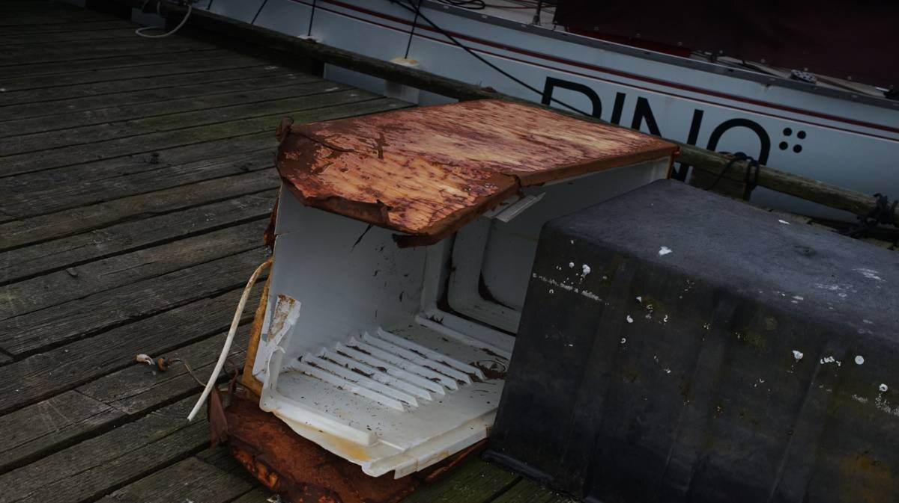
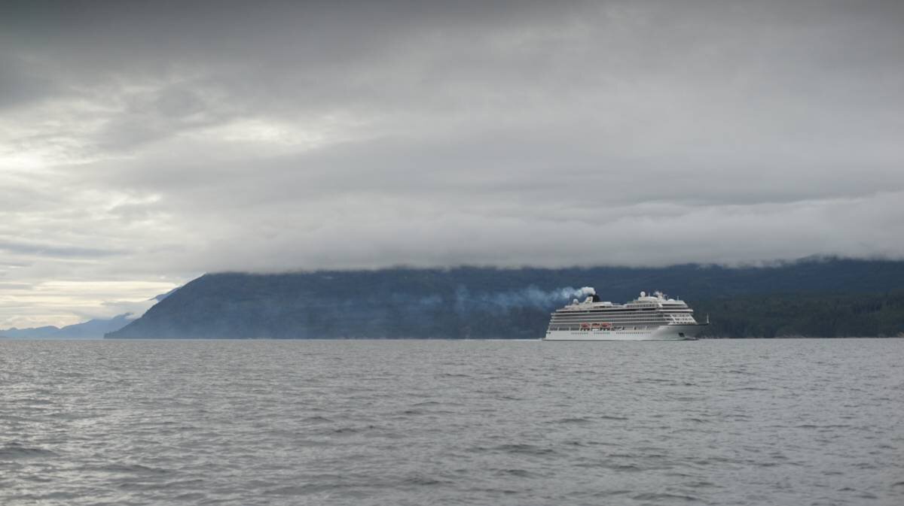

port neville

Port Neville is a good stopover when sailing down Johnstone Strait, whether you are north or sounthbound. We stopped there on our way north on May 14th 2024.
We sailed to Port Neville from Forward Harbour. What to say about Forward Harbour? We anchored in Douglas Bay for the night, we were the first boat there, dropping anchor in 35 feet or so. The wind was down when we arrived, but the 25-30 knots in Johnstone Strait kicked up and were felt here too. You think you a protected there, in your little nook, but the wind curls around the corner and invades your nook. The wind sets you stern to land, turning the area into a lee shore-faaaantastic! We had a few good gusts in here, but our anchor held on. 3 other boats arrived later, one of them pulled up some seaweed when raising their anchor, we did not(they were anchored closer to shore).
We left our spot at 0600. Once past Thynne Point, we raised our sails and sailed the rest of the way to Port Neville. We must have tacked about 25 times to get there, close-reaching-this is all that this region ever permits, thank goodness Pino points high into the wind. The wind was 15 knots out of the NW, not too strong for sailing in these waters, we fought a bit of current in Sunderland Channel at first but it was necessary to catch the area off Tuna Point near slack. When an ebb current meets an opposing wind in Johnstone Strait, which is basically always, south winds here are rare birds, it can create violent conditions off Tuna Point. The wind that day wasn't that strong, but we knew we could make it there in time for slack, it was a reasonable goal.

When sailing down Sunderland, we tacked from one side of the channel to the other, and on one of those tacks we spotted about 3 orcas ahead. We diverted but they kept coming nearer to us, close enough that we could see their features well. Their fins are so tall they reach above our lifelines. The best part of all was that they had a baby with them! A little porpoise-sized orca! "Get low, get low!" We shouted as they swam away(if you get that reference you are solid gold, your brain is full of beautiful nonsense like ours). We saw a second, different pod later that day too!
We sailed right up to the entrance to Port Neville. No one was at the government dock, so we got our bumpers ready and went to meet with the decrepit dock that would be home to us for the night. This government dock is abandonned, and has been for a long, long while, but it is still sturdy enough to support a few boats.
Anchoring. Anchoring is possible off the government dock, or on the shore opposite, people also go deeper in Port Neville and anchor there(it's an 8-mile long inlet). Note that strong NW winds do funnel in here, rolling over the hills. Our friends Rik and Kay came here 2 years ago and anchored near friends of theirs, they reported that the current and wind was so strong that they didn't dare visit each other.
In high current, docking at the government dock can be tricky, but there wasn't much that day when we pulled onto the dock (it was still neap tides).
Because the dock is abandonned, mooring here is free, but it also means there aren't any services. This place had the longest-running post office and store in B.C., established by Hans and Lilly Hansen in 1891. Apparently, sailors would call Hans by radio for weather reports on Johnstone Strait, but Hans died in 1997, and she in 2003. Their daugther Lorna acted as postmaster after them, sailors could forward their mail there. Lorna and her daughter Erica also continued to give radio reports right until 2010. By then Erica was postmaster, but she moved to Campbell River with family. The old store building still stands today.
Port Neville bears scars of intensive logging, like many hills in British Columbia. The dock was populated by old fishing gear, and a very rusty refrigerator. We slept ok that night, the weather at the dock was fine. Two other sailboats joined us that day(including Caroline and Victor on Moonshine), filling the rest of the spots on the small dock.
When we woke up the next morning at 0600, both boats were gone. We left then too, with the goal to get to Boughey Bay in Havannah Channel... but because the wind took us there early(we had 15 knots from the NW again that day), we pushed on to Telegraph Cove. The wind died as we approached Growler Cove though, and the next day's forecast did not inspire a night at anchor there.
